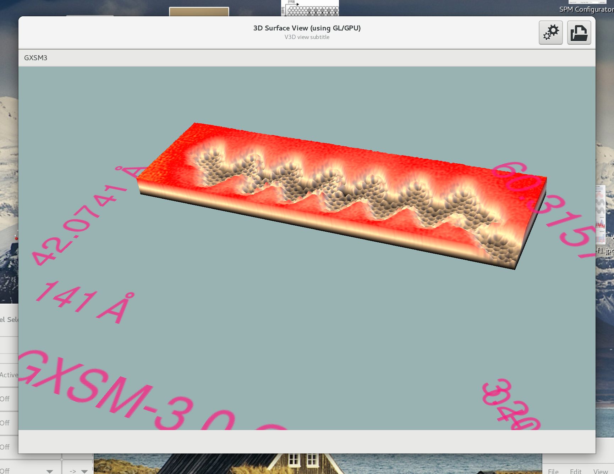
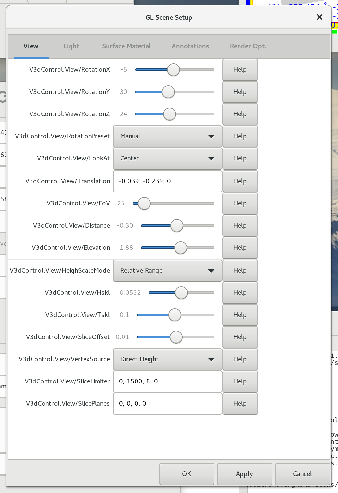
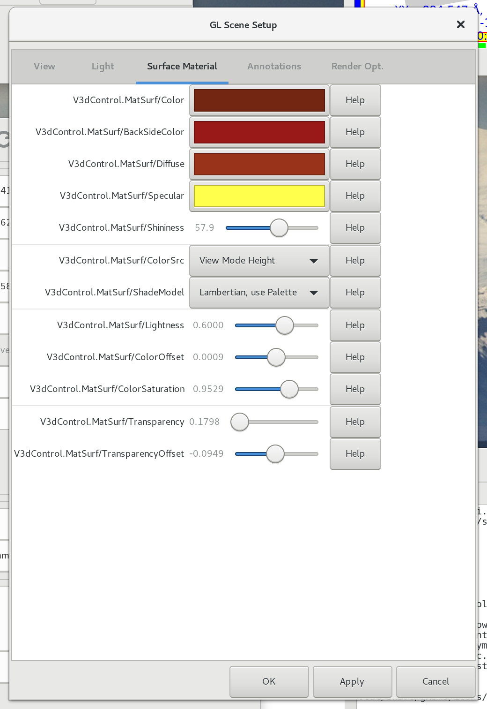
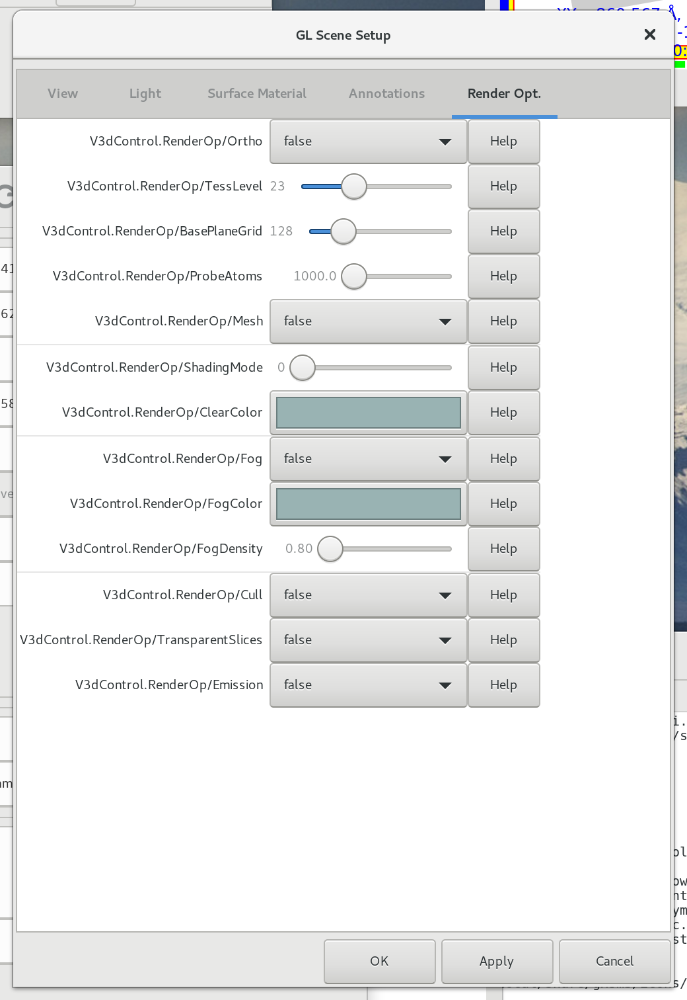
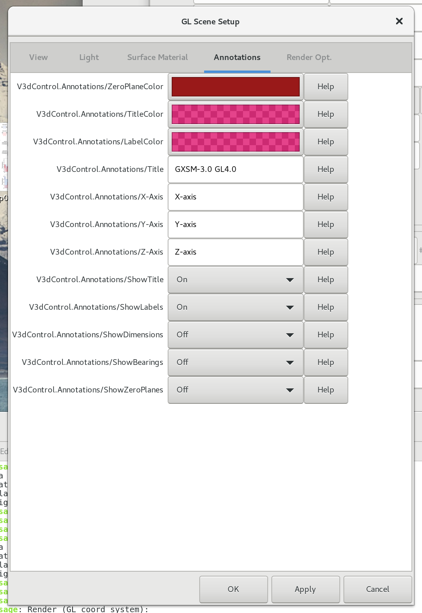
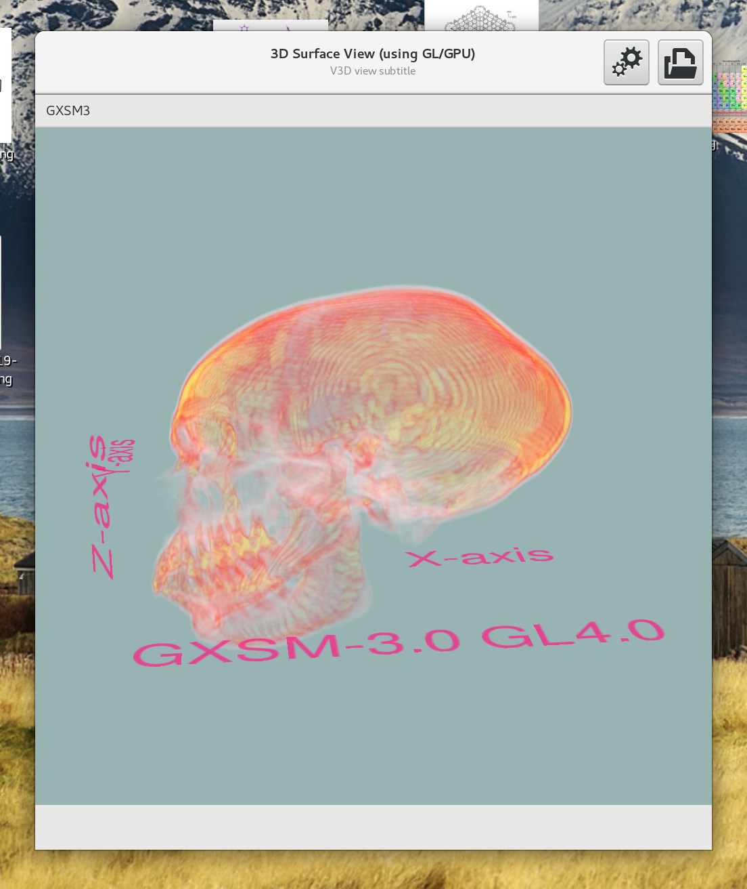
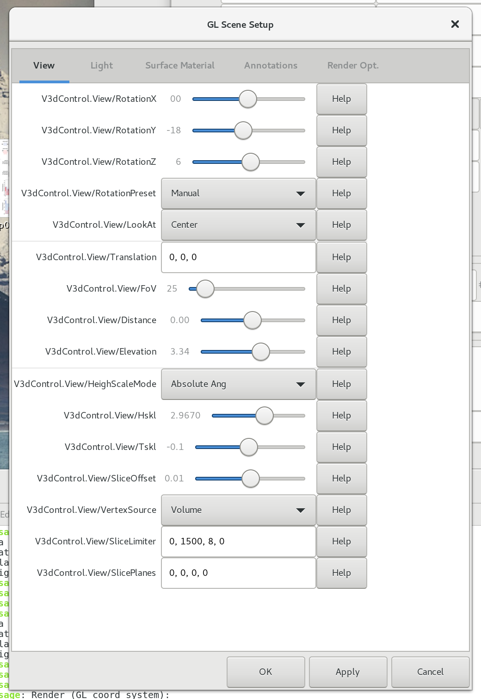
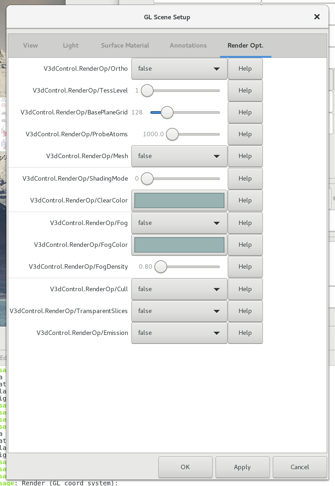
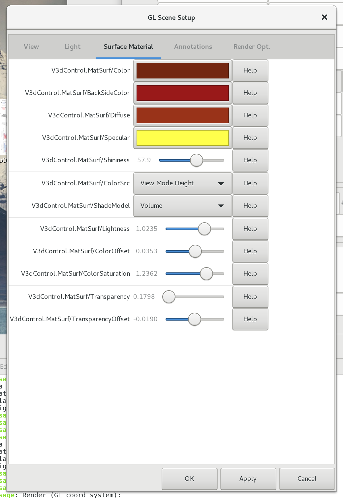

Visualization {#ch:visual}
As a multi purpose 2D/3D data visualization, acquisition and manipulation system GXSM provides a set of powerful graphical presentation modes. Available are 2D grey/false color, profile and 3D representations. The internal objective structure of GXSM allows to switch in between all available "View-Modes" on the fly and at all times, even while scanning. In addition, on the fly data to color space mappings are provided for viewing data.
Data display modes {#Gxsm-VModes}
Due to a possibly huge Z-value range and often small local signal variation special data transformations (e.g. for mapping to color space) are needed to visualize these features. Therefore from Quick, Direct, PlaneSub, Logarith., Horizontal Diff and Periodic view modes can be selected via GXSM main window in "View" or via the pop-up window of the data window itself. The raw data which are saved for example in the nc-files are not affected by a change of the data diplay mode.
Quick
: for each line a line regression is estimated from a subset of points (for speed) and data is slope and offset corrected for visualization.
Direct
: data is displayed 'as is'. Only a linear transformation for shifting and scaling data into view range is performed using the view range "VRange Z" and view offset "VOffset Z" controls located context menue of the scan window.
Direct HiLit
: Same as Direct but marks the lowest and highest values.
Plane
: data is displayed after background correction by a bi-linear/offset function (plane-correction) defined by three Point-Objects. The resulting Z values are linear transformed to shifting and scale data into view range as it is defined by the view range "VRange Z" and view offset "VOffset Z" controls located in the context menue of the scan window or automatically calculated to fit a selected rectangular area.
Horizontal
: shifts the lines, so that their average is zero.
Periodic
: works like Direct, but the available colors are used periodically repeating (mapping: linear Z transform as in Direct modulo number of colors). GXSMNoteThe periodic mode is only via. pop up menu accessible.
Logarithmic
: a logarithmic scaling can be applied to data. It used for very high dynamic data such as diffraction data (e.g. SPA--LEED or XRD) where background variation should be visible, while high intensity peaks are not out of display range. The translation happens in the following way: $$Grey/Colornumber \propto \log \left( 1 + \left| Data - Min \right| \times Contrast + Bright \right) \mbox{,}$$ with $Min$ being the smallest value (omits negative values), Contrast and Bright are calculated from VRange Z and VOffset Z to fit data into desired Z Range window.
Differential
: displays a averaged and weightened X-derivative, similar to the Koehler filter [PlugIn-F1D-Koehler]{reference-type="ref" reference="PlugIn-F1D-Koehler"}, but using a smaller averagening range (16 pixels).
To change the view mode just select a GXSMRadiomain windowQuick / Direct / Plane /Logarith. / Diff.. These data display modes are applyed to all visualization modes, see [Gxsm-Visualisation]{reference-type="ref" reference="Gxsm-Visualisation"}.
Scaling and shifting data view range {#display-dialog}
View Range Z and View Offset Z {#bright-contrast}
The parameters VRange Z and VOffset Z found in Gxsm main window are controlling the always applied linear transformation of the data to grey or false color mapping.
GXSMEntryVRange Z sets the data Z-Range which should be mapped to full color space.
GXSMEntryVOffset Z sets the offset relative to averaged data range. E.g. if you data represents a stepped surface (terraces assumed to be horizontal aligned) and you set the GXSMEntryVRange Z to approx the step height you will get only one terrace in view range, others are pinned at max/min color, using the VOffset you can select a terrace to be viewed with high contrast.
Usually using the GXSMToolbarAutodisp button will do the job automatically for the whole scan or if a rectangle object 1.2.2.3{reference-type="ref" reference="Gxsm-VObjects"} is selected the selected area will be scaled automatically to full color space available. GXSMEntryVOffset Z is always set to zero by GXSMToolbarAutodisp.
GXSMHintIf your scan has some distorsions/spikes messing up the automatic min-max range, try enabling the GXSMMenuView/Tolerant Auto Display-option. This will compute the view-range via an automatic histogram analysis in a progressive way.
In SPA--LEED mode: CPS High -- Low {#CPShi-lo}
In SPA--LEED mode the scaling of CPS-High/Low can be set.
Using a palette: false color mapping
Custom and GXSM provided palette {#color-custom}
The color palette is simply a one dimensional PNM-bitmap file, that can be selected through an entry in the preferences dialog, call GXSMMenuSettings/Preferences, and is located there GXSMPrefUserUser/Palette. Activate GXSMMenuView/Palette to make use of the selected palette and refresh the view via the GXSM GXSMToolbarAutodisp.
GXSM will make use of up to 8192 palette entries automatically.
Here a short description of the PNM file format:
P3
# CREATOR: The GIMP's PNM Filter Version 1.0
1024 1
255
R
G
B
R
G
B
...
The file is expected to have at least 1024 RGB-entries (R, G, B values in the range 0 ...255) just following the header, but no more than 8192 are accepted. Use gimp to generate this conveniently. [^1]
GXSM can (re)load a new palette at any time. Choose a new one as described above and refresh via the GXSM GXSMToolbarAutoDisp.
Additional custom palette files can be loaded from any location, put the full path to it into GXSMPrefPathsPaths/UserPalette and press OK, then you will find it in the list of available palette files in GXSMMenuView/Palette on next call of the preferences.
Additional Information
In particular during data acquisition it is convinient to have a 2D representation of the data and a line graph of the last scan line(s). You can get this by activating GXSMMenuView/Red profile. You can also active the display of additional meta-data of the image by GXSMMenuView/Side Pan. That will show you on the different tabs the paramaters/varialbes of the nc-file, Probe Events, User Events, and a list of the Objects.[^2].
Visualization modes
[]{#Gxsm-Visualisation label="Gxsm-Visualisation"}
The visualization mode can be switched at all times, see [sec:channels:dialog]{reference-type="ref" reference="sec:channels:dialog"} for details. The default mode is always Grey 2D.
View "No"
This is not really a visualization mode, it just prevents any display and saves memory and CPU power if a data channel is just to be acquired in background in a blind manner.
View "Grey 2D"
The default mode for viewing 2D data. It allows using a simple grey scale data representation or using of any available false color palette. By default the image size is scaled to achieve a good fit on your screen. But any zoom (magnifying by number) or quench (down-size by 1/number) is possible.
Window title information
In the window title of the channel view shows for example:
GXSMScreenShotScan2DVObjectsGrey 2D view with commonly used objects and other gizmos OSD scan info of selected parameters is enabled here (red text). The currently active object (colored nodes) is the Rectangle object. Also enabled at time of this pdf data view export is the legend (scale bar and Z legend, below option).
GXSMTTCh2
: channel number is 2.
GXSMTTX+ Topo,*
: this channel is in data acquiring mode, else here appears the path/filename
GXSMTTQ1/5
: the data view is currently down-sized by factor of 5.
GXSMTTShort[2]
: the current data is of type short (2 bytes).
Popup Menu {#Gxsm-TwoD-Popup}
Tthe GXSMPopupimage by clicking GXSMMouse3the image activates several convenient options and displaying tools:
Activate
: set the current window (channel) to active state (used for math, etc.).
Autodisp
: activates this window and performs an automatic scaling.
Mode
: switch the channel mode, see [sec:channels:dialog]{reference-type="ref" reference="sec:channels:dialog"}.
File
: load/save scan data in this channel,\ load/save objects (1.2.2.3{reference-type="ref" reference="Gxsm-VObjects"}),\ Get Info (about this scan, it has to be (re)loaded before, if it was currently acquired),\ bring up a print dialog for this image,\ close channel (removes this data from memory and closes the window).\ The current view including all objects, legned(s), etc. can be exported as png bitmap and also as vector graphics as pdf - -this allows for example to use inkscape to edit the meta data and objects or simply remove them.
Edit
: Copy, Crop (a marked rectangle, creates a new scan), Zoom In/Out (use a rectangle object to select area to zoom in or zoom out to, it resizes data into a new scan).
View
: change view mode, see 1.1{reference-type="ref" reference="Gxsm-VModes"}.
Objects
: set type of object to create, see 1.2.2.3{reference-type="ref" reference="Gxsm-VObjects"}. Remove all removes all objects.
Events
: controls what kind of Events are displayed.
Objects {#Gxsm-VObjects}
Only in the Grey 2D mode are coordinate measurements and selections available. Basic objects are Point, Line, Rectangle, PolyLine, Circle, Ksys (Coordinate System used for atom grid overlays/measuring and also new basic PAH molecule models can be selected) and Parabel. Some are available with the prefix "Show" in the menu, which means the data along a path, such as line, circle and in a case of a point the (possibly) available 3rd layered dimension in depth of scan, is shown using the profile view ([Gxsm-Profile]{reference-type="ref" reference="Gxsm-Profile"}).
Select between the different types of objects by the GXSMPopupObjects. You add an object by left-clicking into the 2D image. You can remove an object by clicking with the middle mouse button on it. [^3] You can remove all visible objects by GXSMPopupObjects/Remove all.
By left-clicking on the object handlers you can modify them. In the case that the handlers are two small you can change their size in the menue GXSMMenuSettings/Prefereces. Look for the settings GXSMPrefGUIHandleLineWidth, GXSMPrefGUIHandleSize and GXSMPrefGUIObjectLineWidth.
For getting the coordinates and Z-value of the mouse position, just hit the middle mouse button to get a cross hair pointer and move around to measure. You can switch the shown units from default unit to pixels using the toggle switch GXSMPopupGrey 2D viewView/Pixels.
While moving objects, the objects properties coordinates (angle, length, ...) are shown in the status line of the window. This is useful for measurements, etc.. More precise measurements are possible using the Show Line object, which is updated on the fly while moving the line interactively across the image.
Objects are also used to provide some math actions with coordinates.
All object coordinates can be viewed and changed using the object popup menu (middle mouse button on object). The objects save/load (File menu of view popup) allows saving objects and reloading those later to any scan at absolute coordinates (including offset).
While scanning is in progress the current scan-line can be viewed as profile, use GXSMPopupGrey 2D viewView/red Profile to toggle it on and off[^4].
Scan Events
[]{#Gxsm-Events label="Gxsm-Events"} Scan Events, available since GXSM-2.0 V1.6.0, can be any kind of Event or Experiment related to the current tip position and time. Per definition a GXSM "Scan Event" holds a position and possible more specific information like what happened. I.e a simple bias change (User-Event-Entry) or a full set of probe data (Prove-Event-Entry).
The number of Events per scan is unlimited. And Events are always getting attached to the current active scan. The Scan Pop-up menu Events allows to show Probe Events or User Events. Because there can be many thousands of Probe Events using the automatic rastered probing, the displayed markers can be limited in number and distance from a certain point, indicated by middle-mouse clicking.
Probe events are sourced by the SRanger Vector Probing (spectroscopy, manipulation, etc.), single and automatic (rastered).
Enabling the displaying of Probe Events will add some controls to the scan window for selecting the range and number of Events to be displayed. Also the setup for data plotting shows up.
-- to be completed --
Tips
Define you personal hot-keys with the pop-up, just select an pop-up entry and press a key!
E.g: Set GXSMKey=,GXSMKey- for GXSMPopupGrey 2D viewView/zoom in,out!
View "Surface 3D"
[]{#view:surface label="view:surface"}
A 3D model of the data, using the Z-value as height, can be viewed using the GL/Mesa renderer. Hardware acceleration is used by the GL subsystem if the X-server provides it. This works even while scanning, but consumes a lot of CPU power and slows the scanning process down.

Pop-up Menu
The GXSMPopup3D view is activated by clicking GXSMMouse3the image. It includes some of the options already known from the Grey 2D popup menu, see 1.2.2.2{reference-type="ref" reference="Gxsm-TwoD-Popup"}. The popup offers some options for controlling the 3D view:
GXSMTTGL Options
: Quick access to the display options\ Zero Plane (enable/disable showing of the "bottom box"),\ Mesh (use meshing instead of solid rendering),\
GXSMTTScene Setup
: Open the control panel for 3D Scene Setup, refer to next section.
Using the mouse for rotation and translation is possible, but a bit unusual. First, set the window size not too huge and the rendering resolution (see Scene Setup) above 1 to speed up things. Then press the left mouse button and move the mouse carefully around for rotation. Use the middle button for translation. If you find this impractical, use the scene setup to set rotation and translation!
Scene Setup
GXSMNotefew preliminary notes on 3D view setup
This dialog allows a sophisticated 3D rendering configuration.
Mouse/wheel motions: rot, distance, translation. See \"Help\" buttons!
View
: Setting of the model (surface) orientation and view. The coordinate system and view controls: scan xyz dimensions are mapped into a 1x1x1 cube (with y may have a aspect if non square) in GL coordinates (GL-XZ is Gxsm-surface plane), Z-scale (absolute, 1=max-value-1x1x1 cube dim or relative angstroem, 1 will scale Z the same as X.)
RotationX/YZ
: Setting of the model (surface) orientation in world space.
RotationPreset
: Select \"Top-View\", then elevation is above, and distance \"in
front of center\"\... if you rotate object/surface, it changes
accordingly. And more default views as named. The \"Manual\"
view will leave XYZ rotation settings untouched vs. pre sets
which will reset the rotations to the selected view at any
update.
LookAt
: Predefines look at positions.
Translation
: model translation in world space.
FoV
: Field of View.
Distance
: Distance from model center in \"Top-View\".
Elevation
: Elevation above model center in \"Top-View\".
HeightScaleMode
: Height scaling mode. Relative range: 1 equals full data range
fits 1x1x1 cube. Absolute Range: only meaningful for XYZ data
with same units. 1 equals Z scale matching X scale to fit 1x1x1
cube. GXSMNotefix typo in GUI
Tskl
: N/A
SliceOffset
: Z-Offset of slicing selection in volume mode.
VertexSource
: Flat: no displacement, Direct Height: data is used directly as
displacement source, ViewMode Height: view mode transformed data
is used. You must select the view more before entering the 3D
View as data is loaded to the GPU only once. Note: Toggle 3D
view back to 2D to update. y: experiments (N/A), Channel-X:
Channel X data is used if available. X/Y/Z-slice: slicing views
for volume data with value dimension. Switch to Volume Shader
(ShadeModel=Volume) in Surface Material Tab. Volume: render 3D
data as volume, also use Volume Shader. Scatter: experimental /
cube projection, N/A.
SliceLimiter
: : Volume view define the detail and range for view aligned
projection planes to be generated. A default cube data set will
fit into a 0 .. 1000 range, typically 50..100 slices are
sufficient, but you can opt for more detail. Computation
intense. Example: $[start = 0, end =1000, step = 10, 0]$ To
project beyond you can extend the ranges to for example
$[-500, 1500, 10, 0]$ -- may be necessary to cover odd aspect
ratio data. Also you can intentionally use it to \"cut-open\" a
volume and only rend par of it - i.e. $[500, 1000, 10, 0]$!
SlicePlanes
: not used at this time.
Light
: Light sources are ambient and a single \"sun\" defined by a light direction vector. TipView: enable/disable rendering of a virtual \"tip\".
Surface Material
: Color mapping/shading: data is always automatically mapped into a 0..1 full scale range equivalent. Gxsm palette is mapped to 0..1 full range. Controls are offset and scale.
Advanced multi dim data handling (you need a value-dimension with
data) if data is in \"time\" you can run the transformation plugin
\"multi-dim transpose\" to swap time to value.
Slicing and volume view, and the use of transparency settings.
Additional transparency for blending. The transfer function for
(1-alpha) blending is transparenceoffset+transparencyscale\*value.
Using Palette color as above.
Annotations
: Title, Labels, etc.
Render Opt.
:
Ortho
: Orthographic projection is used when set to true.
TessLevel
: Use the render option \"TessLevel\" to control the tesselation
level, i.e. the detail of rendering. A default triangulated flat
base plane spawning a 128x128 grid is used and is subdivided on
GPU level up to $64\times$ controlled by the tesselation factor.
On GPU level the selected data as used for height field
displacements any any resulting given resolution given by the
tesselation factor. Only if that happens not to be sufficient
you should increase the \"BasePlaneGrid\" size, but there is
usually no need to do so as $128 \times 64$ is bigger than most
data sets pixel resolution. Not recommended for performance
reasons. You may even want to reduce this for less powerful GL
hardware. For this change (BasePlaneGrid only) to take effect
you have to click apply and close/reopen the 3D view to rebuild
the new geometry.
BasePlaneGrid
: See TessLevel.
ProbeAtoms
: Number \"atoms\" created for tip visualization.
Mesh
: false: regular 3D rendering. true: use a mesh.
ShadingMode
: Debug Shader only. Debugging and special shading
mode/experimental and customizable for GL experts to play with.
You can hack even the tess-fragment.glsl shader for custom fun!
ClearColor
: Select the scene backgound color.
Fog\...
: Fog settings -- debug shader only, use debug shader, and debug
mode \"5\" to apply fog.
Cull
: Culling means back side triangles of the surface (hidden in top
view) are never drawn, mean if you look from below, it's like an
roof with no shingles.. faster and normally better. Just
disabled in volume/slicing mode obviously..








The general purpose "Profile 1D" view
[]{#Gxsm-Profile label="Gxsm-Profile"} For several purposes Gxsm can show data using the a general purpose Profile-View representation (XY-plot).
GXSMScreenShotShowLineProfile as used by the Show-Line object (old version gxsm2).
GXSMScreenShotanalysis-2d-profile-measuring-1dGxsm3 Profile View of data section with cursors A,B eneabled for measuring.
In the view-mode Profile 1D it shows the currently measured line or the first or via popup menu (Data Select/...) selected line of the data set. The All option loads all profiles at once, be careful using this with huge scan (lots of memory needed). The scaling is (with respect to shown tickmarks) only correct for all profiles, if the option Y Scaling/hold or Y Scaling/expand only is activated[^5].
Pop-up Menu
The popup menu of the Profile View offer the folowing options:
File
: File operations:
Open, Save
: File handling.
Print
: Printing via script. See subsection Profile Printing.
Activate
: If used as "channel view", to activate this scan.
Options
: This menu provides toggle buttons for the following display options:\
Y lineregression
: Enable to use a "on-the-fly" line regression.
Symbols
: GXSMNA
Legend
: GXSMNA
Tickmarks
: Enable display of tickmarks
no Gridlines
: Disable gridlines
Y Scaling
: Several Y scaling options[^6]:
Y logarithmic
: Set Y axis to logarithmic scale.
Y hold
: Hold Y scale (prevents automatic rescaling).
Y expand only
: Expand Y scale only.
Y auto
: Force auto scale.
...
: A set of manual Y offset shift (move upper/lower bound) and Y
zooming (in/out) options.
GXSMHintFor quicker adjusting pull of the menu (drag the menu apart
by clicking the dashed line) and place it beside!
X Scaling
: GXSMNA
Cursor
: This menu allows to enable up to two cross hair cursers (blue and green). Use the left mouse button to dragg the cursors around, click on the vertical cursor line to grab it! The status line will show (one cursor) the coordinates or (two cursors) the differential coordinates for measurements.\ The Cursor menu (tear it off!) allows to auto position the cursor on local minima or maxima to the left or right of the current position. Or just to skip to the next/previous data point.
Data Select
: Select/walk through a set of multiple data lines or show all.\ GXSMNoteOnce selected all, you can't undo this yet, reopen the "Profile View" therefore.
1D data file format
Via the File menu the profie data can be saved in Ascii format. The file is preceeded by a simple header using commentary lines and a keyword. The data itself follows using the following format:
Height Profile Data:
# ASC LineProfile Data
# Date: Tue Jun 18 17:21:42 2002
# FileName: /tmp/HutProfile.asc
# Len = 405.843A
# tStart= 1016686983s
# tEnd = 1016687662s
# phi = 39.9441\B0
# dX = 0.235244A
# dY = -0.197002A
# dZ = 0.0139465A
# Xo = -1079.55A
# Yo = 0A
# Anz = 1323
# NSets = 1
# Xunit = A
# Xalias= AA
# Xlabel= L
# Yunit = A
# Yalias= AA
# Ylabel= Z
# Title = title not set
# Format= X[index*LineLen/Nx] Z[DA]... InUnit: X[Xunit] Z[Zunit]...
0 -103 InUnits: 0 -1.43649
0.30676 -105 InUnits: 0.306992 -1.46439
0.613519 -107 InUnits: 0.613983 -1.49228
0.920279 -107 InUnits: 0.920975 -1.49228
1.22704 -106 InUnits: 1.22797 -1.47833
1.5338 -104 InUnits: 1.53496 -1.45044
...
STS Data:
# ASC LineProfile Data
# Date: Tue Jun 18 17:24:59 2002
# FileName: /tmp/STS.asc
# Len = 0A
# tStart= 1024442686s
# tEnd = 1024442686s
# phi = 0\B0
# dX = 0A
# dY = 0A
# dZ = 1A
# Xo = 0A
# Yo = 0A
# Anz = 500
# NSets = 2
# Xunit = V
# Xalias= V
# Xlabel= Bias
# Yunit = nA
# Yalias= nA
# Ylabel= I
# Title = STS [local Spectroscopy]
# Format= X[index*LineLen/Nx] Z[DA]... InUnit: X[Xunit] Z[Zunit]...
0 0 0 InUnits: -2 0 0
0.02 0 0 InUnits: -1.99198 0 0
0.04 0 0 InUnits: -1.98397 0 0
0.06 0 0 InUnits: -1.97595 0 0
0.08 0 0 InUnits: -1.96794 0 0
...
Simple Shell Script for extracting just X and Y data:
#!/bin/bash
for file do
awk '{ if ($1 != "#") { print $5, $6}}' $file > $file.dat1
done
Gxsm can reload this type of files using just the Open command. The file should have the extension to be recognized as a profile data set.
Profile Printing
Starting from the File menu you will find the Print-entry. From here you have access to six user commands. This commands are simple shell scripts that receive a temporarily created version of the 1D profile as argument and can do various things with this profile (not only print). There are six example scripts in the profileplot subdirectory.
-
The first script runs gri to process your profile and will create a postscript file of your print.
-
The second script runs gri to process your profile and will create a postscript file of your print. The data are modified with an embedded Python script to calculate STS.
-
The third script runs gri to process your profile and will create a postscript file of your print. The y-axis is log'ed here.
-
The fourth script runs gri to process your profile and will create a postscript file of your print. This is a copy of the first script. Use this to experiment.
-
The fifth script runs xmgrace to show your profile. Remember that Gxsm will freeze while xmgrace is running, so don't use this option as long as a scan is running.
-
The sixth script runs python-matplot to show your profile. You can export to many bitmap formats from this. Python-matplot is not (yet; check it out) part of debian testing (Feb 05)[^7].
These scripts can run standalone (i. e. without Gxsm running). Simply run them with an ASCII-1D-profile as argument like this:
/path/gxsmplot1d-1.gri.sh myprofile.asc
One can think of many different things these scripts are capable of. They can run any calculation on the profiles. These scripts are designed to run together with the Show Line option, not with the 1-D profile view in the channel selector. If you use the latter you will always receive a plot of line 0.
You can run your own scripts by modifying the entries User/command[1..6] in the preferences.
[^1]: 1. Palette Editor, 2. fill the picture with 1024x1 pixel, 3. save as MyPalette.pnm (ascii-type).
[^2]: The list of objects is currently not autoupdating (Gxsm-2 1.40.0 'Sandy Experiment')
[^3]: If your notebook or mouse has just two buttons click both at the same time.
[^4]: Showing the profile while scanning can delay the scanning process on slower machines, so switch it off if not needed! To save CPU power you can disable auto-scaling and tick marks in the profile view.
[^5]: There is a bug with refreshing the toggle indicators to the initial setting upon first menu activation, to make sure the setting is correct please toggle the option once! Gxsm saves the last setting of all these option.
[^6]: in case no data is appearing, one of the following conditions may be present: negative values (using log.) or zero Y or X range.
[^7]: Follow the instructions on the matplotlib-website for installing. It's easy. Simply add one line to /etc/apt/sources.list and run apt-get update && apt-get install python-matplotlib